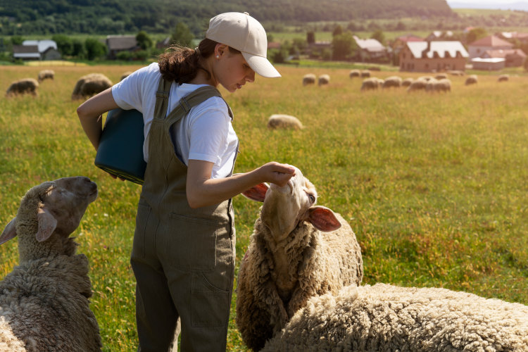
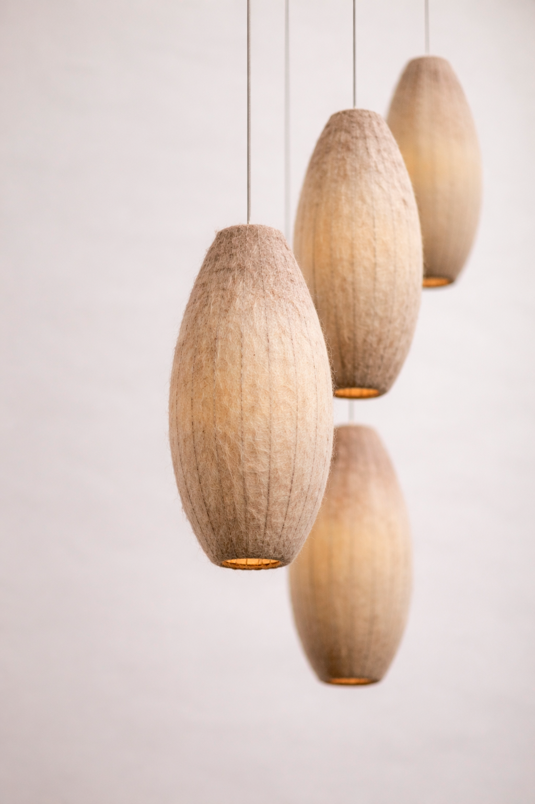
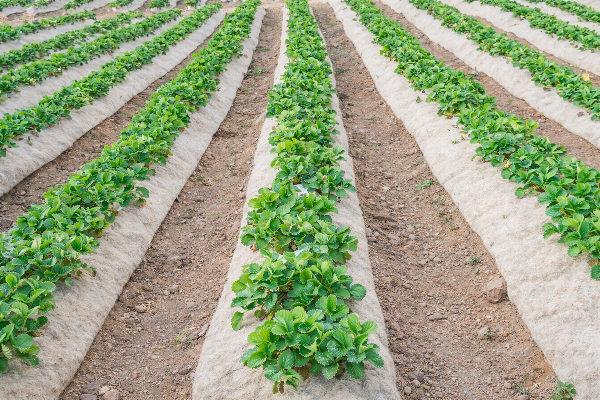
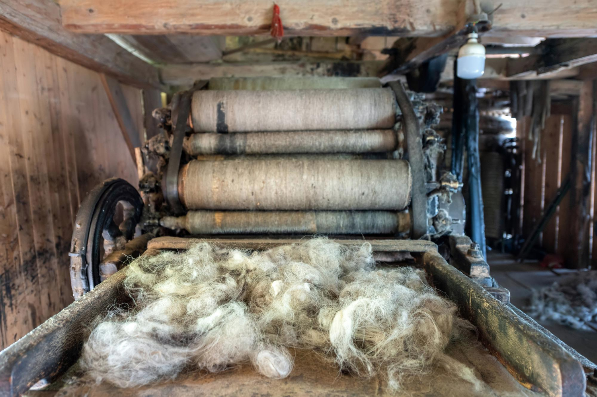

Re_signifq
la lana de residuo a recurso
Transformamos la lana que se desecha en Asturias en productos sostenibles para tu hogar, tu huerta y tu comunidad.
Un proyecto textil y social nacido en Fuentes Cabadas, concejo de Boal, para devolver el valor a la lana asturiana. Cada año, toneladas de lana local terminan en vertederos. Nosotros trabajamos con ganaderos, artesanas y agricultores para convertir ese problema en una oportunidad: productos naturales, bellos y útiles que cuidan la tierra y mantienen vivo el oficio.
EL PROBLEMA
Lo que pasa con la lana en España
España es tierra de pastos y ovejas. Durante siglos, la lana fue el sostén de familias y pueblos enteros. Hoy, por dinámicas de mercado que nada tienen que ver con su valor real, esa misma lana se ha convertido en un residuo.
Un problema ambiental que necesita soluciones.
LA OPORTUNIDAD
Lo que para unos es residuo, para nosotros es recurso.
La lana es mucho más que un material. Es aislante térmico, regulador de humedad, fertilizante natural, materia prima para la creación artesanal. Es un recurso perfecto para un mundo que necesita repensar su relación con los materiales.

NOSOTROS
En los valles del occidente asturiano, las ovejas han dibujado el paisaje durante siglos. Pero hoy, la lana que antaño sostenía economías enteras se ha convertido en un estorbo. Los ganaderos pagan por deshacerse de ella. En Fuentes Cabadas, esta contradicción nos llevó a una convicción: la lana no es el problema; el problema es haber perdido la forma de entender su valor.
Re-Signifq nace precisamente en ese punto de inflexión: entre lo que la lana fue y todo lo que todavía puede llegar a ser.

Trabajamos con lana de oveja procedente de ganaderías locales, incluyendo fibras que tradicionalmente no se utilizan en la industria textil. A través de procesos de bajo impacto ambiental y técnicas que combinan saberes ancestrales —como el lavado, cardado, hilado y fieltrado— con diseño contemporáneo, transformamos esta materia prima en productos para la agroecología, la artesanía y el hogar.
La lana de oveja es una materia prima con múltiples propiedades: aislamiento térmico y acústico, termorregulación natural, durabilidad, seguridad al ser ininflamable y sostenibilidad ambiental, al ser renovable, reciclable y biodegradable.
Nuestra propuesta
Se articula en dos líneas principales. Por un lado, Re-Signifq Studio, centrado en la creación de piezas textiles y objetos de diseño con alto valor estético y cultural. Por otro, Oveya Verde, una línea de productos agroecológicos que utiliza la lana como recurso regenerativo para el suelo, ofreciendo alternativas naturales a los plásticos y fertilizantes químicos.
Re-Signifq se inspira en la tradición lanera de la Península Ibérica, en las rutas de la trashumancia y en el legado de las mestas, entendiendo la lana no solo como material, sino como parte de un sistema cultural, económico y ecológico que conectaba territorio, comunidad y naturaleza.
Más allá de lo productivo, el proyecto busca generar impacto social, fortalecer la economía rural, recuperar oficios en riesgo de desaparición, promover el saber hacer femenino y contribuir a fijar población en zonas rurales.
Aspiramos a consolidarnos como un espacio de creación, investigación y colaboración, donde la lana vuelva a ocupar un lugar central en el desarrollo de soluciones sostenibles.
Nuestro compromiso
- Recuperar lana sin salida y darle nuevos usos.
- Respetar los ritmos artesanales.
- Reinvertir en formación y comunidad.
- Aspirar al residuo cero en todo lo que hacemos.
- Priorizar lo local y sostenible.
Por qué esto importa
La lana es memoria, oficio y vínculo con el paisaje. En un mundo que necesita repensar su relación con los materiales, la lana asturiana tiene mucho que decir. Este proyecto solo quiere ayudar a que se escuche.
Cuando la lana se re-significa, también lo hace el territorio.

Diseño y decoración.
Alfombras, lámparas, paneles acústicos y objetos textiles donde el diseño contemporáneo se encuentra con las técnicas tradicionales sumados a alma Brasileira en suelo Asturiano.
Piezas únicas o series limitadas. Hechas a mano en Asturias.

Soluciones naturales para el campo y el jardín.
Pellets de lana. Fertilizante de liberación lenta. Aportan nitrógeno, mejoran la estructura del suelo y retienen humedad.
Mantilla de lana. Acolchado natural que sustituye al plástico. Protege del frío, regula humedad, ahuyenta babosas y se convierte en abono.
Maseta de lana. Semillero biodegradable. Se planta directamente, protege la raíz y alimenta el suelo.
100% natural. 100% biodegradable. 100% lana recuperada.

EL OBRADOR
Un espacio para crear con lana asturiana.
Cardadoras, ruecas, telares... Un lugar donde vecinos, artesanos, diseñadores y curiosos pueden experimentar con la lana. Aprender técnicas tradicionales, crear sus propias piezas, compartir conocimiento y evitar que la falta de maquinaria limite el desarrollo de proyectos innovadores en el medio rural.
Un punto de encuentro para mantener vivo el oficio.
PREGUNTAS FRECUENTES
CONTACTO Y REDES
Háblanos, pregúntanos, ven a conocernos.
Email: resignifq@gmail.com
Instagram: @re_signifq
Dirección: Fuentes Cabadas, Concejo de Boal (Asturias)
¿Quieres colaborar, encargar algo o simplemente charlar sobre lana asturiana? Estamos a un mensaje de distancia.
Formulario rápido
NEWSLETTER
¿Quieres seguir este proyecto de cerca? Te contaremos cuando tengamos los primeros productos listos, talleres y cosas bonitas. Además, al apuntarte recibirás gratis nuestra pequeña guía: "Cinco formas de usar lana en tu huerto o jardín (aunque no tengas ovejas)".
Sin spam. Solo cosas que merezcan la pena. Prometido.
BLOG
Próximamente
Estamos preparando contenidos sobre sostenibilidad, lana asturiana, agricultura regenerativa y artesanía. ¡No te lo pierdas!